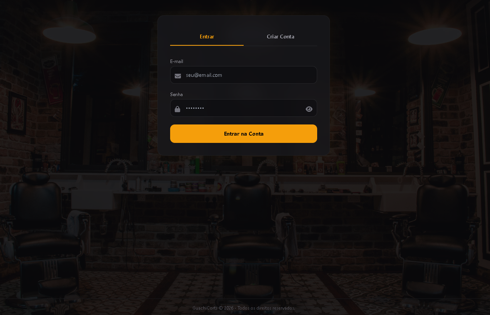
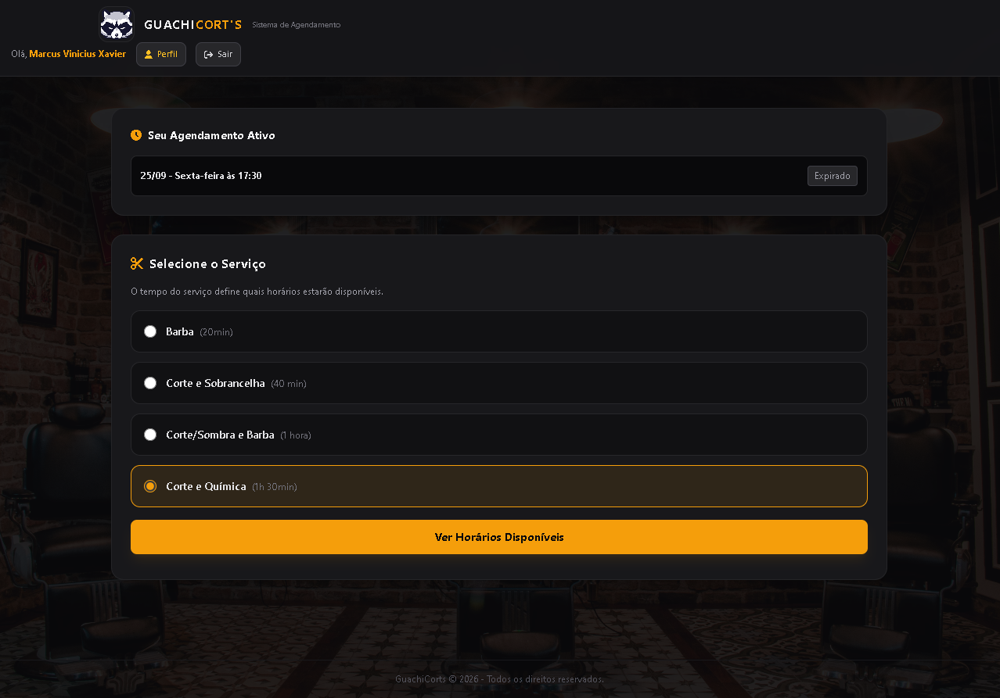
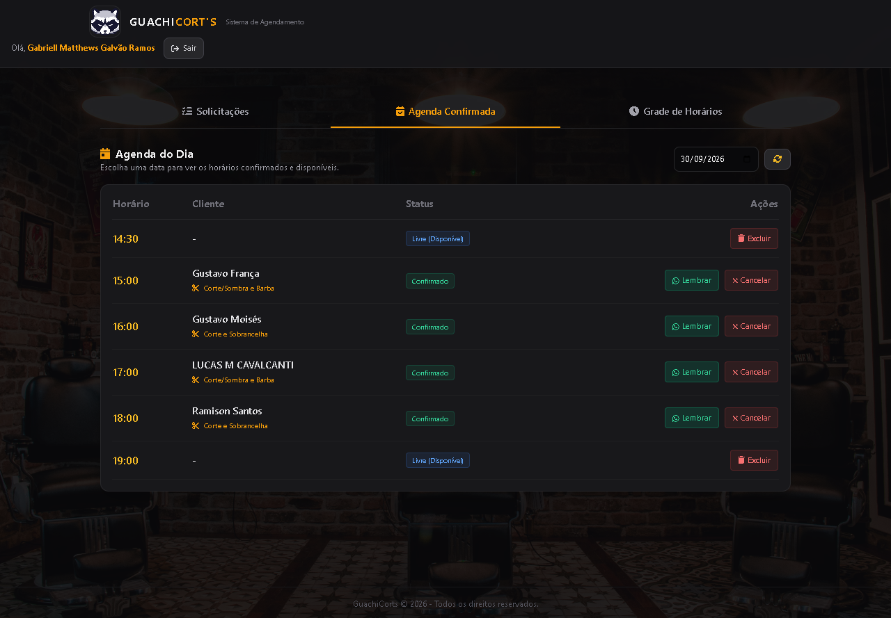

Uma plataforma de agendamento completa, desenhada do zero para entregar velocidade extrema, 100% de personalização e gestão automatizada via WhatsApp.
Explorar o Projeto Ver Sistema
O projeto foi construído sobre três pilares fundamentais.
Construído como Single Page Application (SPA), o sistema não recarrega a página. Navegação instantânea que evita desistências no momento do agendamento.
Esqueça templates prontos. O UI/UX foi desenhado sob medida para a identidade visual da barbearia, garantindo uma experiência premium e exclusiva.
Comunicação automatizada usando a Evolution API. Lembretes automáticos 1h antes do corte e avisos instantâneos de aprovação de horários.

A ideia aqui foi fazer um fluxo direto ao ponto. O dono do salão pediu para que a agenda fosse dinâmica: se o cliente escolhe um corte simples, o sistema reserva 20 minutos; se for uma química, trava a agenda por 1h30. Tudo calculado sozinho.

O painel dele foi pensado para ser usado de forma rápida no celular, entre um corte e outro. O cliente pediu autonomia total, então deixei a gestão da agenda nas mãos dele.
Foi aqui que o projeto subiu de nível. Para reduzir as faltas, integrei o sistema com a Evolution API. Basicamente, a barbearia conversa com o cliente no zap sem o barbeiro precisar digitar uma única palavra.